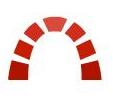

<ion-header>
  <ion-navbar class="setting-title">
    <ion-title>
      <div class="page-subtitle">Display Data Setting</div>
    </ion-title>
  </ion-navbar>
</ion-header>

<ion-content class="setting-content">
  <ion-list no-border>

    <ion-list-header>
       <ion-thumbnail item-left>
          
        </ion-thumbnail>
      Redmine
    </ion-list-header>

    <ion-item>
      <ion-icon name='paper-outline' item-left></ion-icon>
       <ion-label>
         Backlog
      </ion-label>
     
       <ion-toggle item-right [(ngModel)]="form.backlog"></ion-toggle>
    </ion-item>
    
    <ion-item>
      <ion-icon name='folder-outline' item-left></ion-icon>
       <ion-label>
         Task
      </ion-label>
     
       <ion-toggle item-right [(ngModel)]="form.task"></ion-toggle>
    </ion-item>
    
    <ion-item>
      <ion-icon name='medkit-outline' item-left></ion-icon>
       <ion-label>
         Bug
      </ion-label>
     
       <ion-toggle item-right [(ngModel)]="form.bug"></ion-toggle>
    </ion-item>
    
    <ion-item>
      <ion-icon name='planet' item-left></ion-icon>
       <ion-label>
         QA
      </ion-label>
     
       <ion-toggle item-right [(ngModel)]="form.qa"></ion-toggle>
    </ion-item>
    
  </ion-list>


  <ion-list>

    <ion-list-header>
         <ion-thumbnail item-left>
          
        </ion-thumbnail>
        Sonarqube
    </ion-list-header>

    <ion-item>
      <ion-icon name='color-wand' item-left></ion-icon>
       <ion-label>
         QualityGate
      </ion-label>
       <ion-toggle item-right [(ngModel)]="form.qualitygate"></ion-toggle>
    </ion-item>

    <ion-item>
      <ion-icon name='brush' item-left></ion-icon>
      <ion-label>
         LOC
      </ion-label>
       <ion-toggle item-right [(ngModel)]="form.loc"></ion-toggle>
    </ion-item>
    <ion-item>
      <ion-icon name='wine' item-left></ion-icon>
      <ion-label>
         Coverage
      </ion-label>
       <ion-toggle item-right [(ngModel)]="form.coverage"></ion-toggle>
    </ion-item>
     <ion-item>
      <ion-icon name='copy-outline' item-left></ion-icon>
      <ion-label>
         Duplication
      </ion-label>
       <ion-toggle item-right [(ngModel)]="form.duplication"></ion-toggle>
    </ion-item>
  </ion-list>
  <div class="button-area">
    <button ion-button (click)="save()" round>Save</button>
  </div>
</ion-content>

